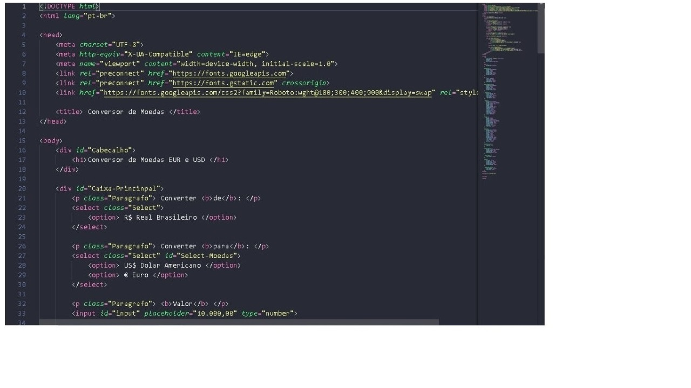

O que eu faço?
Sou Desenvolverdor Web Front-end Junior


O que o Desenvolvedor Web Júnior faz? Programa, codifica e testa sistemas, sites e portais voltados para o ambiente da internet. Executa a manutenção dos sistemas, fazendo eventuais correções necessárias, visando atender às necessidades dos usuários.